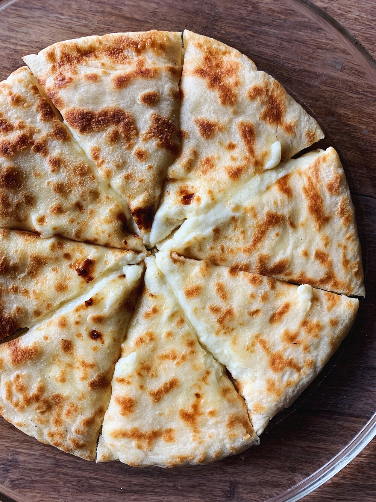

Georgian Imeruli Khachapuri

Description
This traditional Imeruli khachapuri recipe is adapted from the
YouTube channel Cemo Ghemo. The dough needs a lot of proving time,
between eight or 24 hours, depending on whether it's left to rise
at room temperature or in the refrigerator, which is an important
detail to be taken into account when making this dish.
Ingredients
- 200g all-purpose flour
- 100g milk, lukewarm
- approx. 50g water, depends on the flour
- 4g fresh yeast
- 4g salt
- 8g sunflower oil, for greasing
- 300g Imeruli cheese
- 100g sulguni (or the mix of mozzarella and some feta.
- 1 egg, if needed
Steps
- Make the dough from flour, milk, water and yeast.
- Mix the salt into the dough and grease it with oil
- Knead the dough very well, for about 5 minutes
- Dust your hands with flour to prevent sticking,
fold the dough in on itself four times.
- Leave the dough to rise for 8 hours at room
temperature or for 24 hours in the refrigerator
- After eight hours have passed, make the filling.
Grate the cheese into one bowl, mix it, and see
if you can shape it into a ball. If it's falling
apart, add a small amount of egg to it.
- Shape the dough into a large circle by hand, place
the cheese ball in the center and fold the edges, so
the cheese is sealed in
- Turn over, flatten first by hand, then with a rolling
pin until about 24cm in diameter.
- Bake in the pan, with the lid on top, for about 5
minutes on each side.